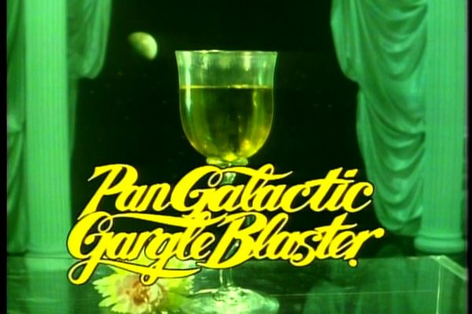

Pan Galactic Gargle Blaster

Description:
"After two of those babies, the dullest,
most by-the-book Vogon will be up on the bar in stilettos,
yodeling mountain shanties and swearing he's the king of the
Gray Binding Fiefdoms of Saxaquine"
The Pan Galactic Gargle Blaster is
an alcoholic beverage invented by ex-President
of the Galaxy, Zaphod Beeblebrox. Considered the
Best Drink in Existence, the Pan Galactic
Gargle Blaster is said to have effects similar to
"having your brains smashed out by a slice of lemon
wrapped round a large gold brick."
Beeblebrox himself advised that you should "never drink
more than two Pan Galactic Gargle Blasters unless you are
a thirty ton mega elephant with bronchial pneumonia." (At
this time, it should be noted that the chronicler of this
recipe has excellent legal representation
should any reader pursue this concontion.)
Ingredients:
- 1 bottle Ol' Janx Spirit
- 1 measure water from the seas of Santraginus V
- 3 cubes Arcturan Mega-gin
- 4 litres Fallian marsh gas
- 1 measure Qualactin Hypermint extract
- 1 tooth of an Algolian Suntiger
- 1 olive
- Zamphour to taste
Instructions:
- Take the juice from the bottle of Ol' Janx Spirit and pour
into it the water from the seas of Santraginus V. - Oh,
that Santraginean seawater! Oh, those Santraginean fish!
- Allow the cubes of Arcturan Mega-gin to melt into the mixture
(it must be properly iced or the benzene is lost).
- Bubble the Fallian marsh gas through it in memory of all those
happy hikers who have died of pleasure in the Marshes of Fallia.
- Over the back of a silver spoon, float the Qualactin Hypermint
extract, redolent of all the heady odours of the dark Qualactin
Zones, subtle, sweet, and mystic.
- Drop in the tooth of an Algolian Suntiger. Watch it dissolve,
spreading the fires of the Algolian Suns deep into the heart
of the drink.
- Sprinkle Zamphour.
- Add an olive.
- Enjoy...very carefully.
<<BACK